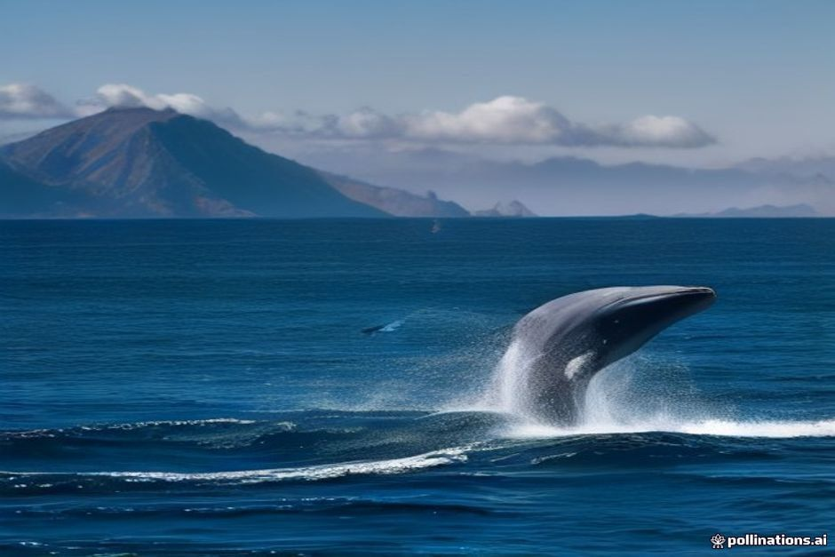
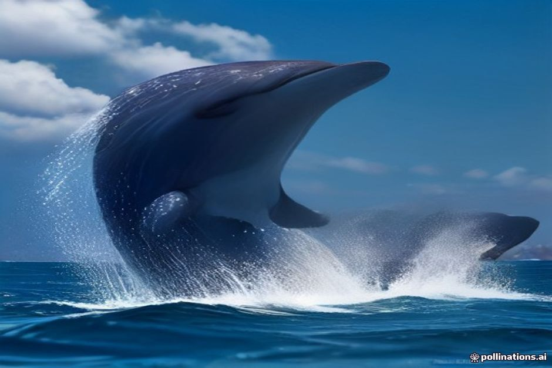

Ogni operatore di questa costa ti dirà che Madeira è un ottimo posto per i cetacei, e il numero viene ripetuto così spesso da perdere quasi significato: oltre 28 specie censite in queste acque. Quello che conta davvero se stai organizzando un'uscita è più circoscritto — quali di queste specie hai probabilità di vedere, quando, e da che tipo di barca. Ecco la versione onesta.
Si vedono delfini e balene a Madeira?
Sì — le acque di Madeira sono davvero uno dei tratti più ricchi dell'Atlantico per i cetacei, non un'esagerazione da marketing. L'isola si trova vicino a uno strapiombo sottomarino dove il fondale precipita in acque profonde a poca distanza dalla riva, il che porta le aree di alimentazione delle balene insolitamente vicine alla costa rispetto alla maggior parte dei litorali europei. Gli operatori di catamarani e barche che lavorano in queste acque riportano tassi di avvistamento nell'ordine del 70-90% su una stagione intera, un dato alto, ma significa anche che un'uscita senza avvistamenti resta del tutto normale.

Quali specie vivono nelle acque di Madeira?
I tursiopi e i globicefali di Gray sono le due specie residenti, presenti al largo dell'isola tutto l'anno anziché solo di passaggio. Anche i capodogli e i delfini striati vengono avvistati regolarmente durante l'anno, anche se in modo meno prevedibile. Oltre a questi, l'elenco diventa stagionale: i delfini comuni compaiono soprattutto in inverno e primavera, i delfini maculati atlantici e le balenottere di Bryde dalla primavera all'autunno, e le grandi balene migratorie — balenottere comuni e megattere — passano principalmente in primavera, usando Madeira come tappa sulle rotte tra aree di alimentazione e riproduzione più a nord e più a sud.
Qual è il periodo migliore per vedere balene e delfini a Madeira?
Da aprile a settembre si ha la miglior combinazione complessiva tra mare calmo e varietà di specie, con giugno-agosto spesso indicato come stagione di punta — anche se è anche il periodo con più traffico di barche. Se la priorità sono in particolare le grandi balene migratorie e non i delfini, restringi la finestra alla primavera: da marzo a giugno è quando balenottere comuni e megattere hanno più probabilità di essere in migrazione. Fuori da questo periodo si conta principalmente sui residenti.
Quali sono residenti, e quali sono solo di passaggio?
Globicefali di Gray e tursiopi sono le due specie che si possono realisticamente aspettare in qualunque mese, perché occupano un territorio intorno all'isola invece di migrare altrove. I capodogli si immergono in profondità al largo e vengono avvistati abbastanza spesso da sembrare quasi residenti, senza però esserlo con certezza. Tutto il resto dell'elenco — i delfini maculati e quelli striati, i delfini comuni stagionali, e ogni grande balena migratoria — dipende dal far coincidere l'uscita con il periodo giusto del calendario piuttosto che presentarsi quando capita.
Dove, al largo della costa, si vedono davvero?
I tursiopi tendono a restare più vicini alla riva, spesso in vista della costa sud intorno a Funchal e Câmara de Lobos, esattamente il tratto che una barca privata copre in un normale pomeriggio in mare. Globicefali, capodogli e le grandi specie migratorie restano più al largo, sopra le acque profonde oltre la piattaforma continentale, il motivo per cui gli operatori dedicati al whale watching gestiscono in genere rotte più lunghe e più aperte rispetto a una gita costiera giornaliera.
Un avvistamento è garantito?
No, e qualsiasi operatore che sostiene il contrario sta esagerando. Anche con un tasso di avvistamento stagionale del 70-90%, delfini e balene restano animali selvatici che si muovono nell'oceano aperto secondo i propri tempi, non una tappa fissa di un percorso. Quello che un buon skipper può fare è leggere il mare, seguire le segnalazioni delle altre barche via radio, e dare a un avvistamento la miglior possibilità — ma non forzarlo.

L'osservazione di delfini e balene a Madeira è regolamentata?
Sì. Le barche che operano intorno ai cetacei nelle acque di Madeira seguono regole regionali che disciplinano quanto una barca possa avvicinarsi, per quanto tempo possa restare vicino a un animale, e quante barche possano posizionarsi vicino a un branco nello stesso momento. Lo scopo delle regole è mantenere indisturbato il comportamento degli animali — niente inseguimenti, niente accerchiamento di un branco, niente motori accelerati per avvicinarsi — il che in pratica rende anche l'incontro più tranquillo e migliore, quando avviene.
Si possono vedere durante un'uscita in barca privata con Chifbay?
Possibile, anche se non è lo scopo di nessuna delle due uscite e non può essere promesso. Chifbay organizza un Day Trip e un Sunset Trip privati lungo la costa sud, da Câmara de Lobos verso Cabo Girão e Fajã dos Padres, e i delfini in particolare a volte cavalcano l'onda di prua o riemergono nelle vicinanze lungo questo percorso — è il territorio abituale della popolazione residente di tursiopi. Le balene sono più rare su un percorso costiero come questo, dato che tendono a stare più al largo di quanto vadano entrambe le uscite. Se un avvistamento avviene, capita lungo la strada verso qualcos'altro, non come motivo dell'uscita.
I residenti non hanno bisogno di una stagione. Tutto il resto dell'elenco, sì.
Se delfini e balene sono l'unico motivo della tua uscita, prenota con un operatore che gestisce rotte dedicate al whale watching più al largo, nella finestra aprile-settembre per le probabilità migliori. Se invece vuoi la costa, il bagno e le scogliere, con una possibilità concreta di incontrare i delfini lungo il percorso anziché una garanzia, quella è la barca che portiamo noi.